1 · Retirez les lunettes
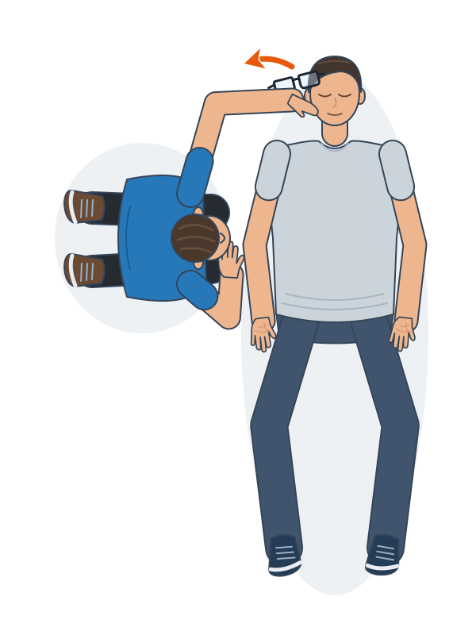
Si elle en porte, retirez doucement ses lunettes. Sinon, passez à l’étape suivante.
Uniquement si la personne porte des lunettes2 · Alignez les jambes
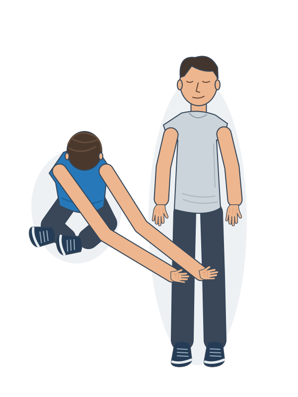
Rapprochez doucement ses jambes dans l’axe du corps.
Les deux jambes restent allongées3 · Placez le bras proche
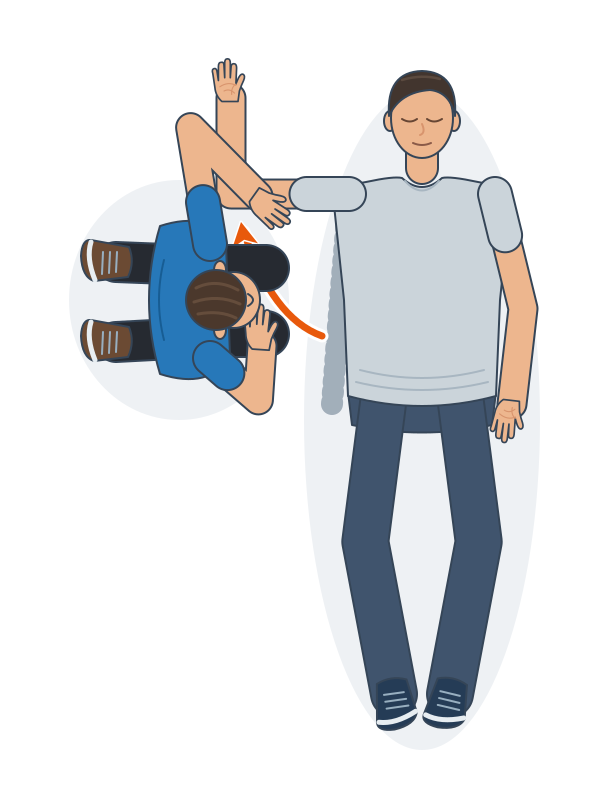
Placez le bras de votre côté à angle droit, le coude plié et la paume vers le haut.
La paume regarde le plafond4 · Placez la main opposée
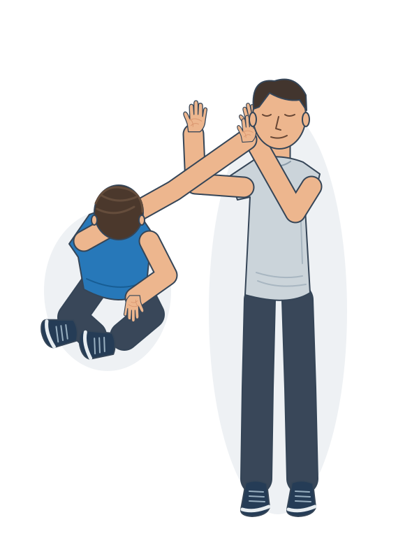
Amenez le dos de l’autre main contre l’oreille de votre côté. Maintenez ce contact, paume contre paume.
Cette main sera entre la joue et le sol5 · Relevez le genou opposé
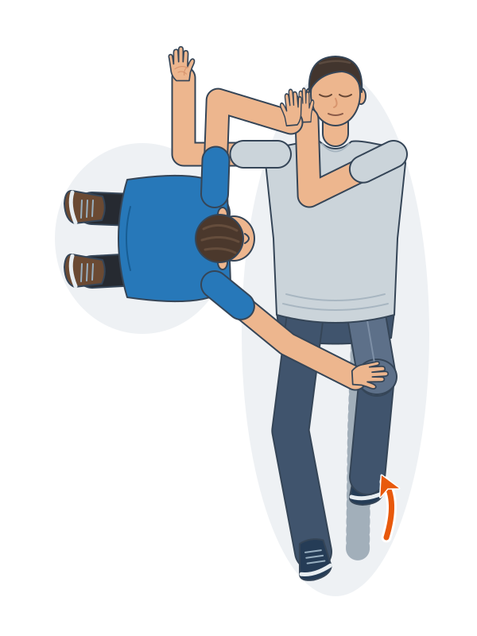
Avec votre main libre, relevez le genou éloigné en le saisissant par-dessous.
Le pied reste posé au sol ; la main reste contre l’oreille6 · Faites rouler vers vous
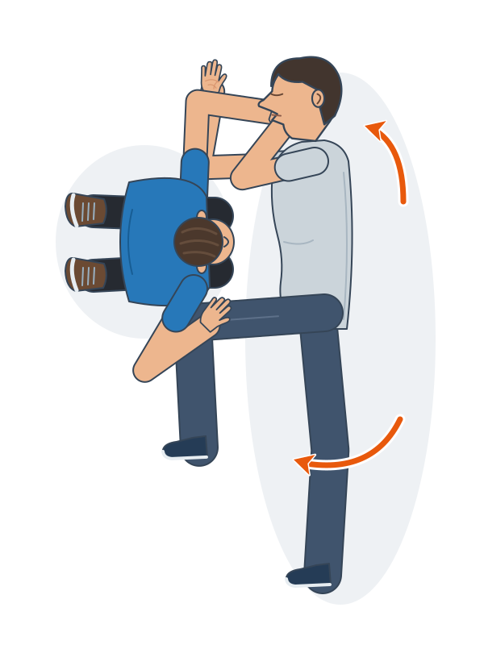
Tirez doucement le genou vers vous pour tourner la personne sur le côté. Accompagnez la tête avec la main déjà maintenue.
La main de la victime passe sous sa joue7 · Retirez votre main
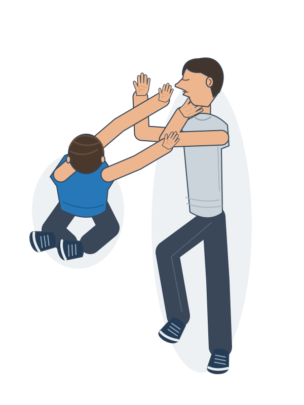
Retirez doucement votre main sous la tête en maintenant le coude avec votre autre main.
La main de la victime reste entre sa joue et le sol8 · Réglez la jambe du dessus
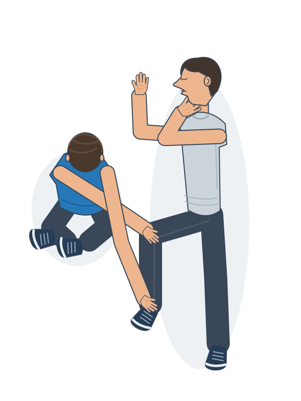
Ajustez la jambe du dessus pour former un angle droit à la hanche et au genou.
La jambe du dessus stabilise le corps9 · Inclinez doucement la tête
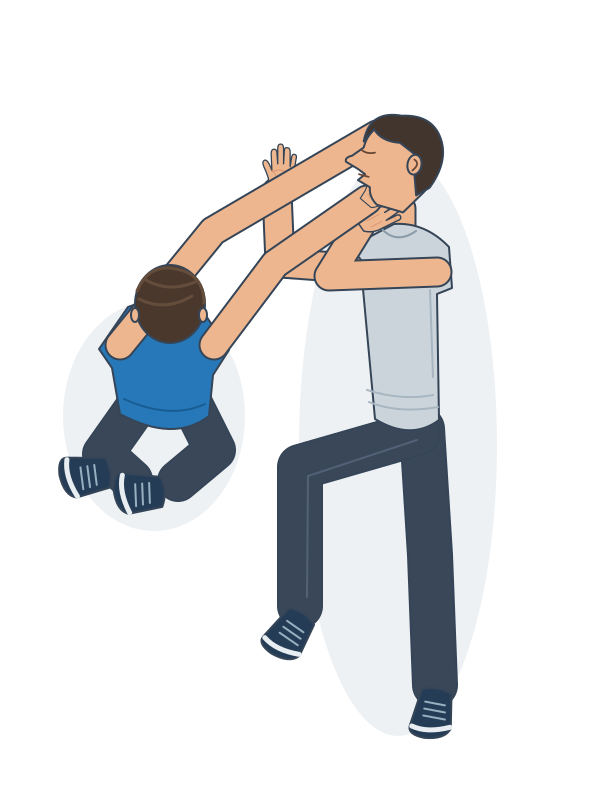
Inclinez doucement la tête en arrière pour garder les voies aériennes dégagées.
La joue reste soutenue par la main10 · Ouvrez la bouche
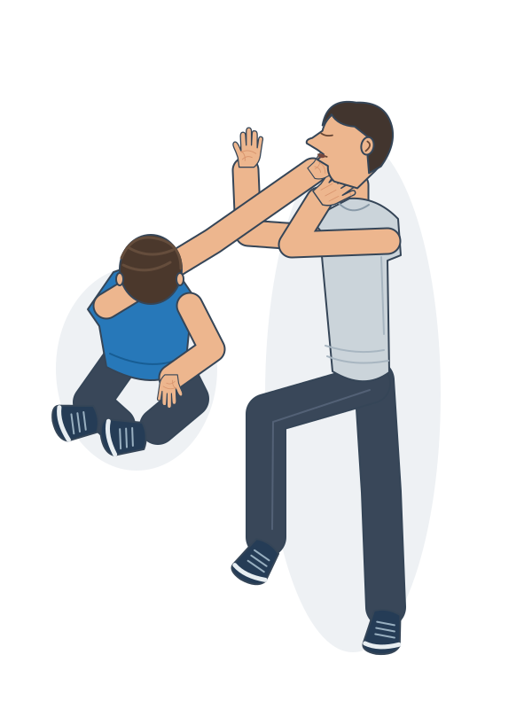
Ouvrez doucement la bouche avec le pouce et l’index, sans déplacer la tête.
La bouche permet aux liquides de s’écouler vers le sol11 · Appelez les secours
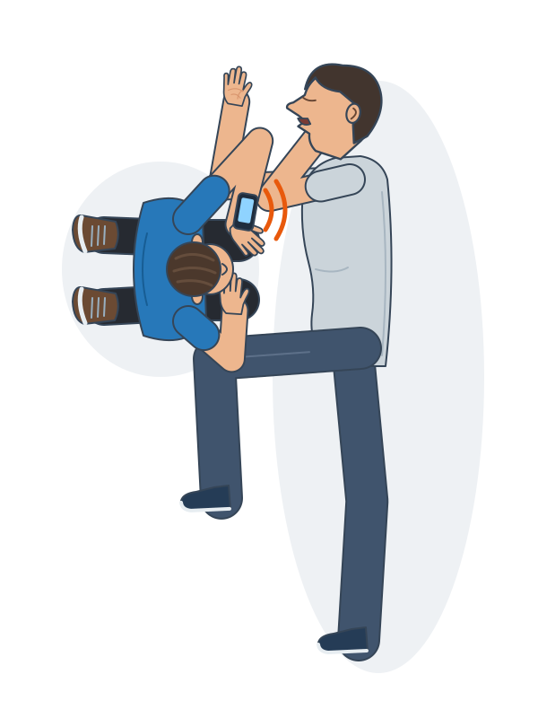
Si l’alerte n’a pas encore été donnée, appelez le 112 sur haut-parleur.
Restez auprès de la personne12 · Surveillez la respiration
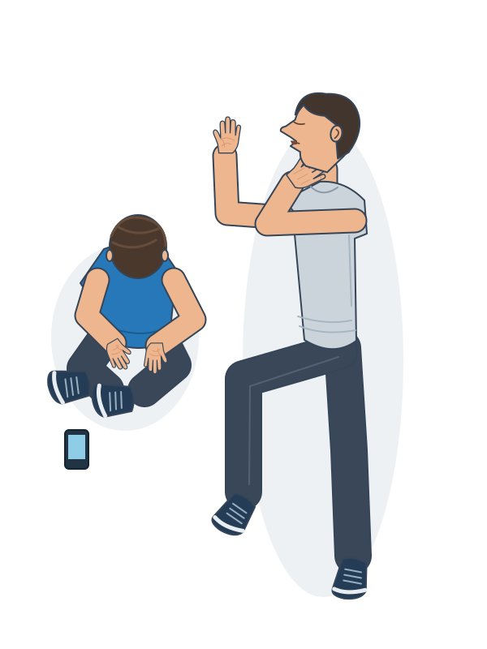
Vérifiez sans interruption que la personne respire normalement.
Respiration anormale ou absente : passez à la réanimation